# app.py
import os
import time
# Create a file and write some content to it
with open("output.txt", "a") as f:
f.write(f"Hello from Docker!\nTime: {time.time()}\n")
print("File written successfully.")Containers are isolated environments using the kernel of your host OS
- They are running instances of images which are “blueprints” or snapshots for containers
- They are build in layers, which can be used across multiple images
Images ~ Classes: Specified via Dockerfile
Containers ~ Objects: instantiations of images
Dockerfile: Text document containing commands user would call on the command line to assemble an image
Basic Dockerfile launching a shell with Python 3.8 available:
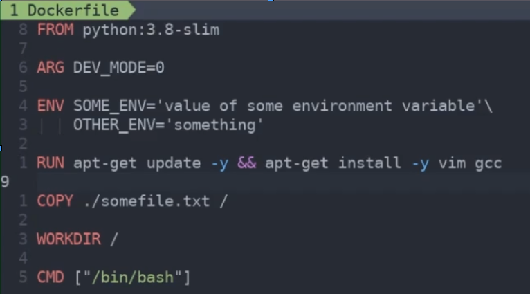
Anything below a changed line runs so it’s important to specify frequently-changing commands at the bottom of the file, non frequently used at the top. Reduces Docker runtime
Each command creates a new layer. Keeping the number of layers as low as possible will keep image size down -> Use as shown above for ENV and && for RUN + follow install with multiple things to install
Dockerfile definitions:
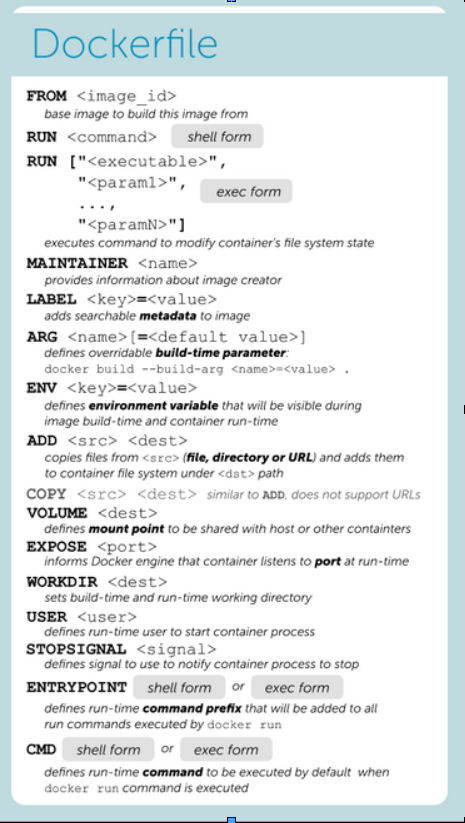
Docker ABCs: Running a simple application with Docker volume to persist data
- Step 1: Create Dockerfile
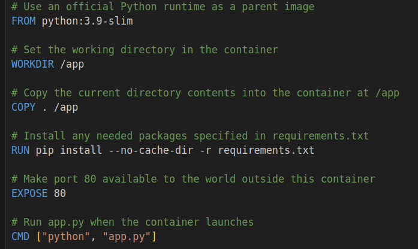
- Step 2: Create simple Python application
Step 3: Create requirements.txt to specify Python dependencies.
Step 4: Build the Docker image using Dockerfile and name it (here my-python-app)
%%bash
docker build -t my-python-app .- Step 5: Run the Docker image with a volume
%%bash
docker run -v $(pwd):/app my-python-app- Can also run interactively and run from shell from inside a container:
- When run the container, application will write message + time
- Can run
python app.pyfrom inside the container, which will keep appending to the file exitand the changes will persist
%%bash
docker run -it --name my-python-app-container -v $(pwd):/app my-python-app /bin/bash- Don’t forget to remove the container with
docker rm my-python-app-container, or better yet, run with rm flag as below:
%%bash
docker run --rm -it --name my-python-app-container -v $(pwd):/app my-python-app /bin/bashFollowing Learn Docker in a Month of Lunches by Elton Stoneman
Ch.2: Understanding Docker and Hello World
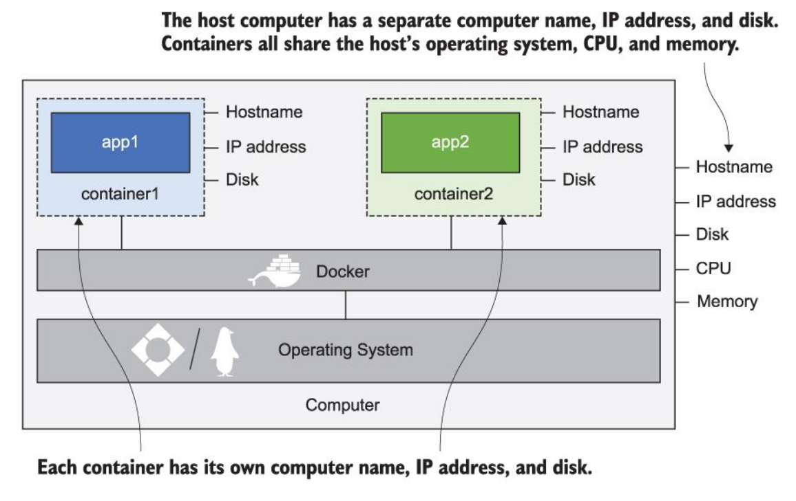
Note that each container shares the operating system of the host computer!
docker container ls: lists running containers; add –all to see exited containersdocker container logs {start_of_container_id}: displays log entries collected by containerdocker container stats {start_of_container_id}: displays stats about CPU, memory, network, and disk the container is usingdocker container inspect {start_of_container_id}: displays low level details of the containerNotes on ‘Exited’ containers: i.) They no longer consume CPU time or memory, ii.) They still take up disk space and can be restarted, can also check logs and copy files to/from container’s filesystem.
docker container run --detach --publish 8088:80 diamol/ch02-hello-diamol-web:- –detach starts the container in the background and shows container id
- –publish publishes a port from the container to the computer. When Docker is installed, it injects itself into computer’s networking layer. Publishing means Docker will listen to network traffic on computer port and send it to the container.
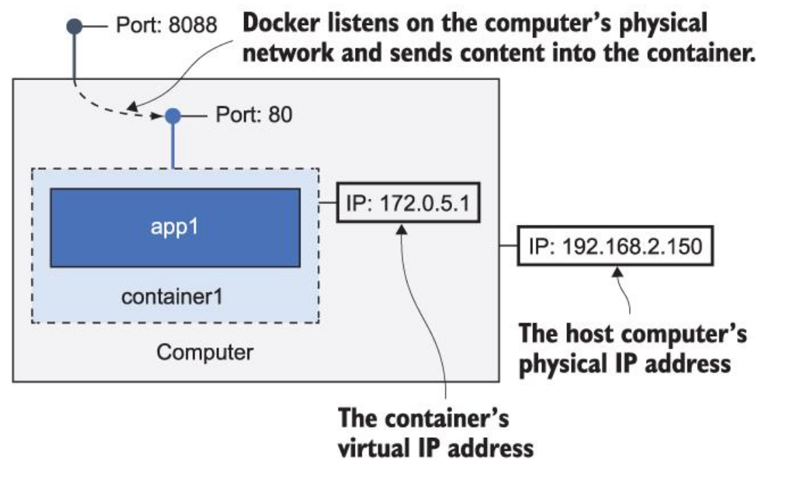
docker container rm --force $(docker container ls --all --quiet): remove all containers, use with caution since it does not ask for confirmation.CLI sends requests to Docker API, which then interacts with the Docker Engine.
Exercise: replace index.html inside the container to change website front matter.
- Used
docker containerto findcpfrom among the available commands. - Used
docker exec jovial_meninsky ls -Rto list container’s file system info. - Had to find absolute path since relative paths would not work ->
docker exec jovial_meninsky pwdfor path prefix - Solution:
docker container cp diamol/ch02/exercises/hello-diamol-web/html/index.html jovial_meninsky:/usr/local/apache2/htdocs/index.htmlSuccessfully copied 2.05kB to jovial_meninsky:/usr/local/apache2/htdocs/index.html
- Used
Ch. 3: Building your own docker images with Dockerfile
docker container runwill download image locally if it’s not on the machine because software distribution is built into the Docker platform. Or can usedocker image pull.Docker images may be packaged with default set of config values, but you should be able to provide different config settings when running a container (using environment variables for example, which are just key/value pairs provided by the operating system). For example, replace TARGET environment variable with google.com below:
- docker container run –env TARGET=google.com diamol/ch03-web-ping
From a directory containing a Dockerfile, build an image with current directory as context via:
docker image build --tag web-ping .
Process for running apps with Docker:
- Write Dockerfile with steps to package the app
- Collect the resources that need to go into Docker image
- Decide how you want users of image to configure app behavior
Image layers can be shared between different images and different containers. 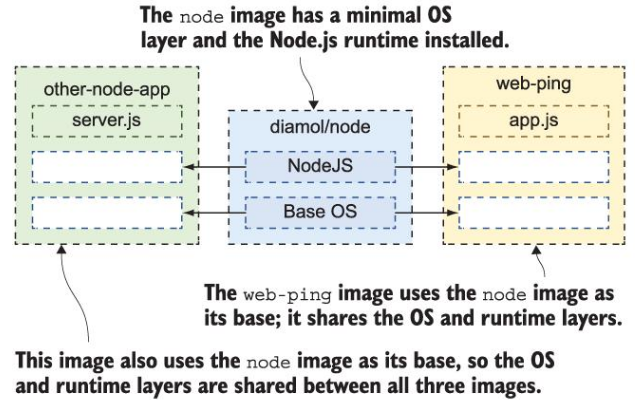
Notice how each gcr and mintonano image are listed at 17.4GB yet
docker system dflists total usage at less than 18GB: This is because the layers between these two large images are shared!
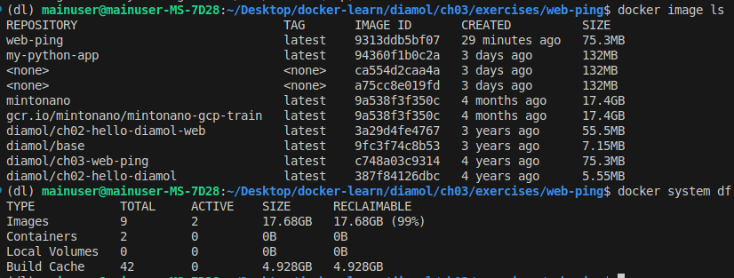
- Because image layers can be shared, they can’t be edited (read-only).
- If contents/commands of a given step change, the following steps will be re-executed; previous layers are used from cache. Docker knows that previous layers didn’t change because their hash hasn’t changed (hash is made from instructions and files being copied).
- Optimize the file by moving parts unlikely to change towards the top and combining commands:
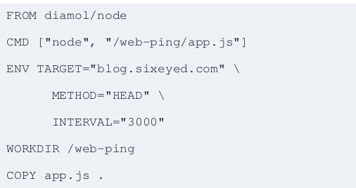
Lab 3: Modifying contents of Docker container without modifying Dockerfile. 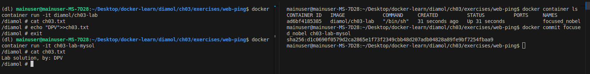
Note that I ran
docker commitwhile the diamol/ch03-lab was running, before typing exit. Then can go to the newly created container that now has new contents.
Ch. 4: Packaging applications from source code into Docker images
In the provided Dockerfile, the build tools and dependencies are excluded from the final image by using a multi-stage build. Here’s how it works step-by-step:
Multi-Stage Build Explanation
Builder Stage: ```Dockerfile FROM diamol/maven AS builder
WORKDIR /usr/src/iotd COPY pom.xml . RUN mvn -B dependency:go-offline
COPY . . RUN mvn package ```
- Base Image:
diamol/mavenis used as the base image, which includes Maven and all necessary build tools. - Working Directory: Sets the working directory to
/usr/src/iotd. - Copy
pom.xml: Copies thepom.xmlfile to the container. - Download Dependencies: Runs
mvn -B dependency:go-offlineto download all dependencies specified in thepom.xmlfile. - Copy Source Code: Copies the entire source code to the container.
- Build the Project: Runs
mvn packageto compile the source code and package it into a JAR file.
- Base Image:
Application Stage: ```Dockerfile FROM diamol/openjdk
WORKDIR /app COPY –from=builder /usr/src/iotd/target/iotd-service-0.1.0.jar .
EXPOSE 80 ENTRYPOINT [“java”, “-jar”, “/app/iotd-service-0.1.0.jar”] ```
- Base Image:
diamol/openjdkis used as the base image, which includes only the JDK runtime environment. - Working Directory: Sets the working directory to
/app. - Copy JAR File: Copies the JAR file from the
builderstage to the/appdirectory in the application stage usingCOPY --from=builder. - Expose Port: Informs Docker that the container will listen on port 80.
- Set Entry Point: Sets the command to run the JAR file using
java -jar.
- Base Image:
How Build Tools and Dependencies are Excluded
- Builder Stage: The
builderstage uses thediamol/mavenimage, which includes Maven and all necessary build tools to compile the Java application. This stage performs all the build-related tasks, such as downloading dependencies and packaging the application into a JAR file. - Application Stage: The
appstage uses thediamol/openjdkimage, which only includes the JDK runtime environment. It does not include Maven or any other build tools.- The
COPY --from=buildercommand copies only the compiled JAR file from thebuilderstage to theappstage. This means that none of the build tools, source code, or dependencies downloaded during the build process are included in the final image. - As a result, the final image is smaller and only contains the runtime environment and the packaged application, making it more efficient and secure.
- The
By using multi-stage builds, you ensure that the final Docker image contains only what is necessary to run the application, excluding all build tools and intermediate files used during the build process.
docker network create nat: creates a Docker network, allowing any containers on the network to reach each other using the container names via a bridge network. Else containers can communicate via host’s networking space.- To run, use
docker run --name iotd -p 800:80 --network nat image-of-the-day. Will run NASA’s image of the day REST API so you can make repeated calls to this application without hitting NASA’s service.
Example in interpreted application
- Let’s break down the purpose of the final
WORKDIRandCOPYcommands in the context of the provided Dockerfile:
FROM diamol/node AS builder
WORKDIR /src
COPY src/package.json .
RUN npm install
# app
FROM diamol/node
EXPOSE 80
CMD ["node", "server.js"]
WORKDIR /app
COPY --from=builder /src/node_modules/ /app/node_modules/Application Stage
FROM diamol/node
FROM diamol/node- Purpose: Uses the
diamol/nodeimage as the base image for the application stage. - Effect: This stage will be used to run the application.
EXPOSE 80
EXPOSE 80- Purpose: Informs Docker that the container will listen on port 80 at runtime.
- Effect: This is a documentation feature and does not actually publish the port.
CMD [“node”, “server.js”]
CMD ["node", "server.js"]- Purpose: Sets the default command to run when the container starts.
- Effect: The container will run
node server.jswhen it starts.
WORKDIR /app
WORKDIR /app- Purpose: Sets the working directory to
/appfor subsequent instructions in the application stage. - Effect: Any relative paths in subsequent commands will be relative to
/app.
COPY –from=builder /src/node_modules/ /app/node_modules/
COPY --from=builder /src/node_modules/ /app/node_modules/- Purpose: Copies the
node_modulesdirectory from thebuilderstage to the/appdirectory in the application stage. - Effect: This ensures that the application has access to the installed dependencies without including the entire build context.
Summary
- WORKDIR /app: Sets the working directory to
/appfor subsequent instructions. This helps in organizing the application files within the container. - COPY –from=builder /src/node_modules/ /app/node_modules/: Copies the
node_modulesdirectory from thebuilderstage to the/appdirectory in the final image. This ensures that the final image contains the necessary runtime dependencies without including the entire build context.
By using these commands, the Dockerfile ensures that the final image is clean and contains only the necessary files to run the application, while keeping the build process and dependencies separate.
- Example of ‘refactoring’ Dockerfile from ~500MB -> ~17MB on Linux.
FROM diamol/golang
WORKDIR web
COPY index.html .
COPY main.go .
RUN go build -o /web/server
RUN chmod +x /web/server
CMD ["/web/server"]
ENV USER=sixeyed
EXPOSE 80- The image built with this file includes the go compiler and other unnecessary build tools. In addition, any time we change index.html or anything prior to the RUN commands, the entire application will be rebuilt since RUN commands are in layers following these changes. The final-stage second image will not contain the build tools and if we change index.html, only the final layer will be rebuilt since others will come from cache.
FROM diamol/golang AS builder
COPY main.go .
RUN go build -o /server
RUN chmod +x /server
# app
FROM diamol/base
EXPOSE 80
CMD ["/web/server"]
ENV USER="sixeyed"
WORKDIR web
COPY --from=builder /server .
COPY index.html .Ch. 5: Sharing images with Docker Hub and other registries
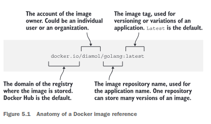
- Pushing images to Docker Hub:
- Set dockerId environment variable:
export dockerId="my-docker-id"(used to log in to Docker Hub) docker login --username $dockerIddocker image tag image-gallery $dockerId/image-gallery:v1(note that tagging an image built locally will not rebuild the image, will just make another reference to the same image)docker image push $dockerId/image-gallery:v1
- Set dockerId environment variable:
- Note that free version of Docker Hub only supports public repositories.
Other Notes
- Restarting docker service installed with snap:
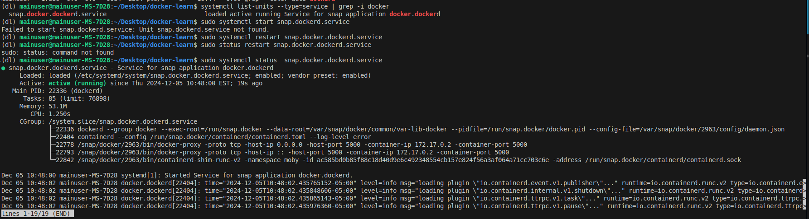